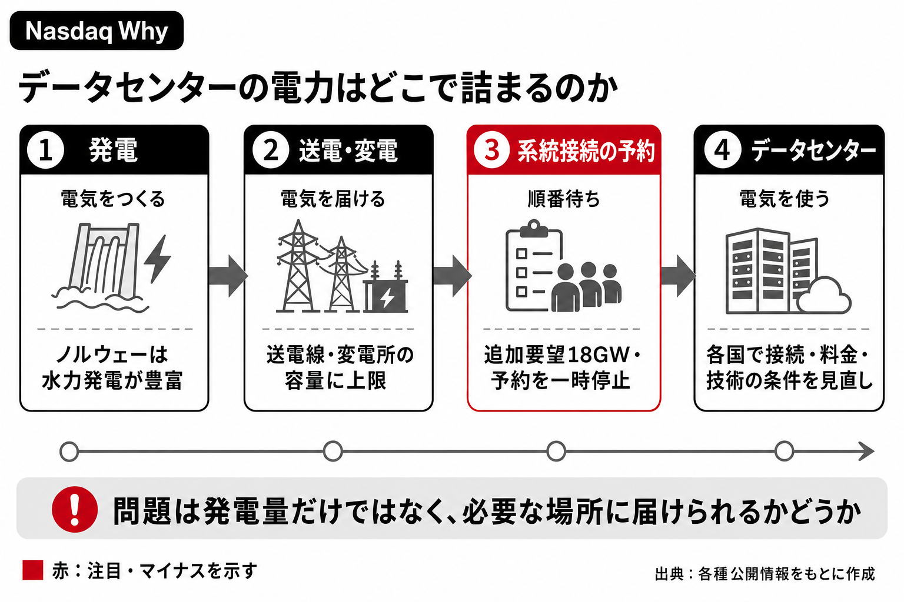
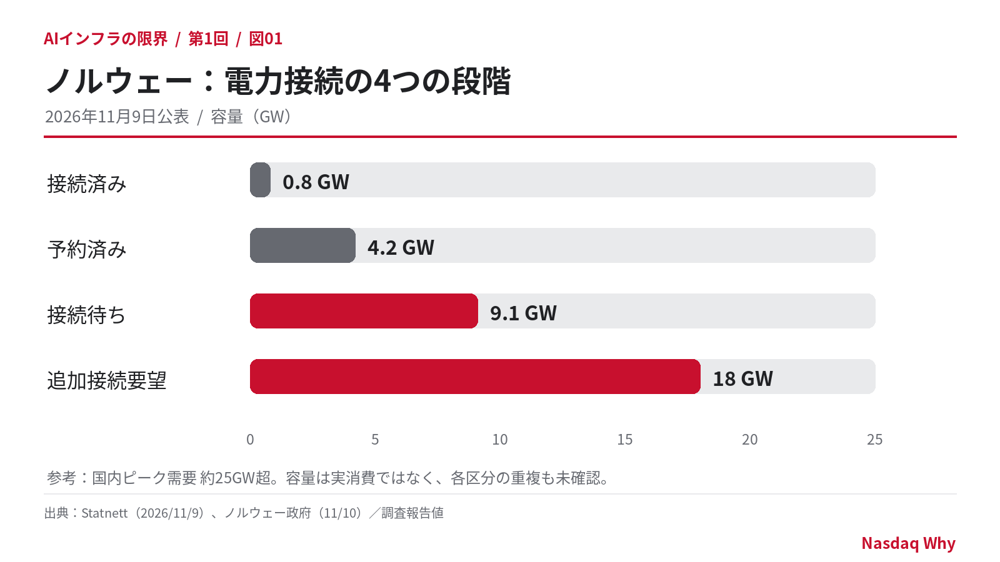
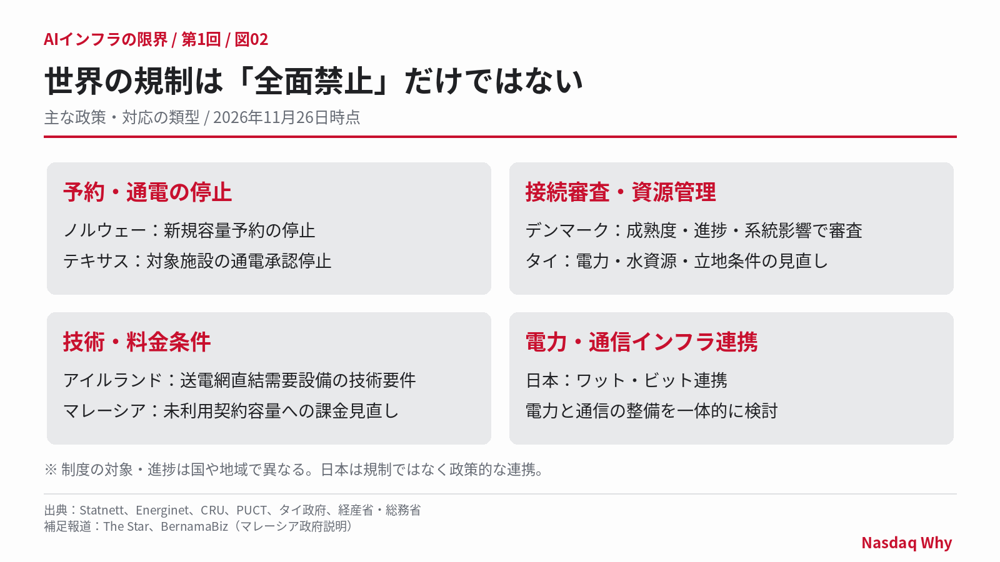
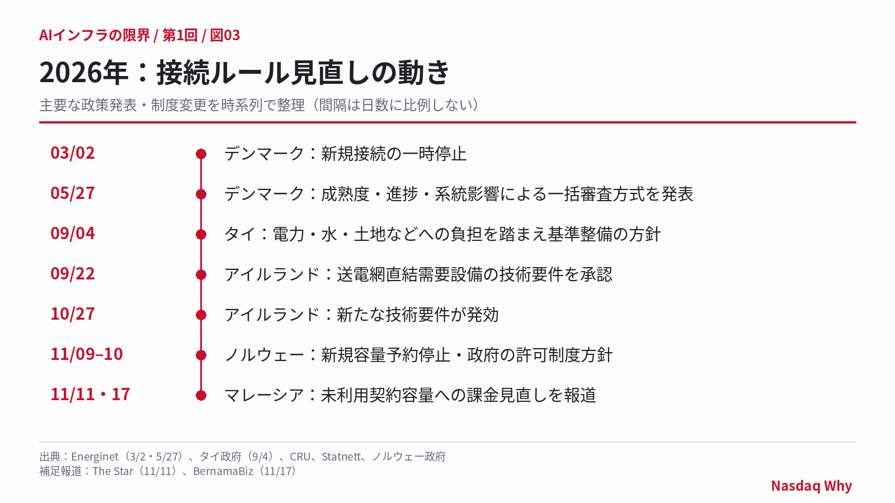

AIインフラの限界 第1回
なぜ水力発電大国ノルウェーまでデータセンターを制限するのか？ 世界で始まったAI電力争奪戦
AI半導体を確保できれば、AIデータセンターを建設できる。 これまでのAIブームでは、NVIDIAのGPUやHBM、先端半導体の供給能力が注目されてきた。 しかし今、AI産業の成長を左右するもう一つの制約が浮かび上がっている。 電力だ。 しかも、問題は単純な発電量の不足ではない。 水力発電が豊富なノルウェーでさえ、データセンターへの新規電力接続予約を一時停止する事態となった。 世界のAI投資に何が起きているのか。

1．水力発電大国ノルウェーが新規電力予約を停止
2026年11月9日、ノルウェーの送電網運営会社Statnettは、データセンター向けの新規系統容量予約を一時停止すると発表した。
停止期間は遅くとも2027年8月1日までとされている。
翌11月10日には、ノルウェー政府もデータセンターの許可制度の導入を含む、管理された成長に向けた方針を発表した。
背景には、急増する電力接続要望がある。
政府が公表した数字は次のとおりだ。
| データセンターの電力接続状況 | 容量 |
|---|---|
| 接続済み | 0.8GW |
| 予約済み | 4.2GW |
| 接続待ち | 9.1GW |
| 追加接続要望 | 18.0GW |
| ノルウェー国内ピーク電力需要（参考） | 約25GW強 |

接続済み、予約済み、接続待ちだけで14.1GWに達する。さらに、18GWの追加要望が提出されている。
追加要望だけでも、国内のピーク電力需要の約7割に相当する規模だ。
ただし、これは直ちに18GWの新しい電力需要が発生することを意味しない。
各案件の実現可能性、稼働時期、重複申請の有無は異なる。予約容量と実際の消費電力も同じではない。
また、この統計はAI専用ではなく、データセンター全体を対象としている。
それでも、電力インフラに対する潜在的な需要の大きさが分かる。
2．電力が豊富でも、供給できるとは限らない
なぜ水力発電が豊富なノルウェーで、このような制限が必要なのか。
理由は、発電能力と送電能力が異なるからだ。
国内全体で十分な発電量があっても、データセンターが建設される地域まで必要な電力を供給できるとは限らない。
送電線、変電所、変圧器などの設備には容量の上限がある。
さらに、大規模なAIデータセンターでは、短時間で電力消費が大きく変動する場合がある。
ノルウェー政府も、データセンターの急速な拡大に伴う電力需要の大きく急激な変動を問題として挙げている。
つまり、発電量だけを増やせば解決するわけではない。
必要な場所へ、必要な量の電力を、安定して供給することが求められている。
3．データセンターを「選別」する時代へ
ノルウェー政府の対応は、一時停止だけではない。
政府は今後、社会にとって必要性の高いデータセンターを重視し、大規模な電力利用者に系統増強費用をより多く負担させる仕組みなどを検討している。
データセンター事業者自身が新たな電源開発に関与する可能性についても言及している。
【全面禁止ではない――停止期間中も最大約900MWが接続可能】
2026年11月16日、Terje Aaslandエネルギー大臣は、議会の書面質問（Dokument nr. 15:568）に対し、今回の措置がデータセンターの系統接続を全面的に停止するものではないことを説明した。
答弁で示されたStatnettの推計は次のとおりだ。
| 項目 | 容量・件数 |
|---|---|
| 必要な系統機能要件の承認を取得済みの案件 | 約900MW |
| 系統容量を予約済みで、機能承認の審査待ちにある案件 | 10件・合計1,450MW |
| 一時停止期間中に接続される可能性のある容量 | 最大約900MW |
| 設備利用率70%と仮定した年間消費電力量 | 最大約5.5TWh |
停止期間中の接続可能容量には、すでに必要な機能要件の承認を受けた未稼働案件のほか、審査中の案件や、承認申請の必要性がまだ確定していない案件も含まれる。
なお、承認済みの約900MWと、停止期間中に接続される可能性のある最大約900MWは、同じ数字だが集計対象が異なる。
これらを単純合算することはできない。
また、個々の案件の稼働開始時期には不確実性が残っている。
年間約5.5TWhという数字も、900MWの設備容量に70%の設備利用率を適用した場合の推計であり、停止期間中に実際に消費される電力量ではない。
つまり、ノルウェー政府はデータセンターの成長を全面的に止めるのではなく、電力網への影響を管理しながら、新規案件の受け入れ条件を見直そうとしている。
どのデータセンターに、どれだけの電力を、どのような条件で供給するのか。
その判断に公共性や系統への影響が加わり始めている。
出典：ノルウェー議会、エネルギー大臣答弁（2026年11月16日） https://www.stortinget.no/no/Saker-og-publikasjoner/Sporsmal/Skriftlige-sporsmal-og-svar/Skriftlig-sporsmal/?qnid=130177
4．世界で広がるデータセンター規制
この動きはノルウェーだけではない。
欧州、北米、アジアでは、電力接続、立地条件、技術要件、料金制度など、さまざまな形でデータセンターへの規制や条件の見直しが進んでいる。

【デンマーク：接続申請を案件の成熟度で再評価】
デンマークでは2026年3月、新規の送電網接続に関する一時停止措置が導入された。
5月27日、送電網運営会社Energinetは、大規模な系統接続案件を対象とする新たな審査方式を発表した。
新方式では、複数案件をまとめて審査し、案件の成熟度、計画の進捗状況、送電網への影響などを評価する。
従来の申請順を維持するだけではなく、実現可能性や系統への影響を考慮して接続案件を管理する仕組みだ。
電力容量を予約しても、計画が進まない案件が増えれば、他の事業者の接続を妨げる可能性がある。
このような問題に対応するため、接続申請の管理そのものが見直されている。
なお、社会的重要性による4段階の優先順位制度については、今回のEnerginet公式発表とは区別する必要がある。法律原文の確認が完了していないため、本記事では制度の詳細には踏み込まない。
出典：Energinet公式発表（2026年3月2日・5月27日）、北欧送電網運営会社共同発表 https://www.energinet.dk/om-nyheder/nyheder/2026/03/02/energinet-indforer-midlertidig-pause-i-nye-nettilslutninger-og-saetter-turbo-pa-akutpakke/ https://via.ritzau.dk/pressemeddelelse/14952374/energinet-indforer-ny-model-for-storre-tilslutninger-og-vil-forst-underskrive-nye-nettilslutningsaftaler-til-efteraret?publisherId=10304728&lang=da https://www.statnett.no/en/about-statnett/news-and-press-releases/news-archive-2026/nordic-tsos-strong-growth-in-grid-connection-requests-challenges-the-power-system/
【アイルランド：接続時の技術要件】
アイルランドでは、大規模な電力需要設備に対し、送電網の短時間の異常時にも接続を維持できる技術要件が導入された。
規制当局CRUは2026年9月22日に系統連系規程の改定を承認し、約5週間後の10月27日に発効した。
この制度はデータセンターだけを対象とするものではなく、送電網に直接接続する需要設備全般を対象としている。
データセンターを増やすことだけでなく、電力網の安定運用を維持することが重視されている。
この問題については第2回で詳しく解説する。
出典：アイルランド規制当局CRU、MPID 345決定 https://www.cru.ie/en-ie/publications/29222/
【米国・テキサス州：通電承認の見直し】
米国でも、データセンターの急増に伴い、地域ごとの規制が注目されている。
テキサス州では、大規模データセンターの通電承認や接続案件の監査が焦点となっている。
ここで注意したいのは、環境関連の許可と、電力網への通電承認が別の手続きであることだ。
環境関連許可が再開されたとしても、直ちに必要な電力が供給されるわけではない。
75MW以上の対象施設に対する通電承認の停止については、12月10日に予定されるERCOTの監査報告が今後の重要な節目となる。
【タイ：電力・水資源・立地条件の見直し】
タイ政府は、2026年9月4日のデータセンター政策委員会に関する公式発表で、データセンターの増加に伴う電力、水、土地、公共インフラへの負担や、地域住民・環境への影響に言及した。
政府は、関連する規制や基準の整備を加速させる方針を示している。
データセンター投資を誘致するだけでなく、国内経済への付加価値、技術移転、環境保護なども考慮する方向だ。
11月には大型データセンターの立地条件の見直しも報じられているが、具体的な容量基準や適用条件については、閣議決定原文と関連細則の確認が必要である。
出典：タイ政府公式発表（2026年9月4日） https://www.thaigov.go.th/en/news/168500
【マレーシア：使われない電力予約への対策】
マレーシアでは、実際には利用されない電力容量が予約されたままになる問題への対策が進められている。
2026年11月10日、投資貿易産業大臣は、未利用の契約電力容量に関係するConnected Load Charge（CLC）の引き上げについて説明したと報じられた。
報道によると、料金単価は1kW当たり8.50リンギットから89.64リンギットへ、約10.5倍に引き上げられた。
また、11月17日の国営通信社Bernamaの報道では、エネルギー移行・水資源省（PETRA）が、CLCの引き上げや超高圧電力料金の導入などの対策を説明している。
電力を大量に予約する案件が増えれば、電力会社は将来の需要に備えてインフラを整備する必要がある。
しかし、予約された電力容量が利用されなければ、他の産業への供給を制約する可能性がある。
こうした問題を抑えるため、電力の利用実態に応じた費用負担の見直しが進められている。
なお、CLCの新単価の具体的な施行日、適用条件、経過措置については、電力会社の公式約款などによる最終確認が必要である。
出典：マレーシア投資貿易産業大臣発言に関するThe Star報道（2026年11月11日）、PETRAの議会答弁を伝えるBernama報道「Govt Strengthens Regulation Of Electricity Supply For Data Centre Sector」（2026年11月17日） https://www.thestar.com.my/business/business-news/2026/11/11/curbs-on-dc-grid-hoarding https://www.bernamabiz.com/news.php?id=2635825

これらの制度は、それぞれ対象や法的な進捗段階が異なる。
世界共通のデータセンター禁止政策が始まったわけではない。
しかし、データセンターの成長を無条件に受け入れるのではなく、限られたインフラに合わせて管理するという方向性は共通している。
5．日本も無関係ではない
日本でも、AIデータセンターの建設計画が増えている。
特に、首都圏など需要が集中する地域では、送電網や変電設備を含めた電力供給能力が重要になる。
2025年6月12日、経済産業省と総務省は「ワット・ビット連携官民懇談会取りまとめ1.0」を公表した。
ワットは電力、ビットは通信・情報処理を表している。
この取り組みでは、電力会社、通信会社、データセンター事業者などが連携し、電力・通信インフラを効率的に整備することを目指している。
データセンターの整備に際して、必要な電力を確保しやすい場所と、必要な通信環境を整備できる場所を一体的に考えるという発想だ。
従来、データセンターの立地は通信環境、顧客との距離、土地などを中心に決められてきた。
今後は、電力を確保できるかどうかが、立地を左右する重要な要素となる可能性がある。
AIデータセンターが地方へ分散することになれば、地域経済や電力設備への投資にも新たな変化が生じるだろう。
出典：経済産業省・総務省「ワット・ビット連携官民懇談会取りまとめ1.0」（2025年6月12日） https://www.meti.go.jp/press/2025/06/20250612001/20250612001.html
6．AI投資の地図が変わる可能性
電力制約が強まったからといって、世界のAI投資が一斉に停止するとは限らない。
考えられる変化は複数ある。
- 投資計画そのものが縮小・中止される。
- 電力接続まで稼働時期が延期される。
- 電力を確保しやすい地域に投資が分散する。
- 発電設備や送電設備への追加投資が必要になる。
- 電力効率の高いAI半導体やシステムの重要性が高まる。
どの変化が主流になるかは、今後の規制や企業の投資計画を確認する必要がある。
重要なのは、半導体の供給だけではAIデータセンターの成長を判断できなくなりつつあることだ。
Nasdaq Whyの視点
AI産業の競争力を考えるとき、これまではGPUをどれだけ確保できるかが重要だった。
これからは、それに加えて次の問いが必要になる。
確保したGPUを、いつ、どこで、どれだけの電力によって稼働させることができるのか。
AI産業の成長を分析するには、半導体からデータセンター、さらに発電・送電インフラまで視野を広げる必要がある。
次回は、AIデータセンターが大量の電力を消費するだけでなく、なぜ電力網そのものの安定性にも影響するのかを解説する。
次回：AIデータセンターは、なぜ電力網の安定性に影響するのか
本記事は公開情報に基づく産業・技術動向の分析であり、特定の金融商品の購入・売却を推奨するものではありません。
出典
- ノルウェー政府（2026年11月10日）
- Statnett（2026年11月9日）
- ノルウェー議会・エネルギー大臣答弁 Dok.15:568（2026年11月16日）
- デンマーク・Energinet（2026年3月2日）
- デンマーク・Energinet公式プレスリリース（2026年5月27日）
- 北欧送電網運営会社共同発表
- アイルランド・CRU
- 米国・PUCT／ERCOT資料
- タイ政府（2026年9月4日）
- 経済産業省・総務省（2025年6月12日）
- デンマークの新規接続審査方式に関する法律事務所解説
- テキサス州の規制に関するGibson Dunn法律事務所資料
- マレーシア投資貿易産業大臣発言に関するThe Star報道（2026年11月11日）
- マレーシアPETRAの議会答弁を伝えるBernama報道「Govt Strengthens Regulation Of Electricity Supply For Data Centre Sector」（2026年11月17日23時29分）